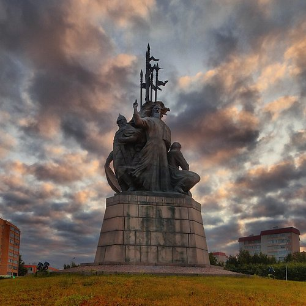
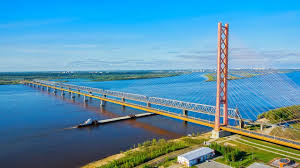
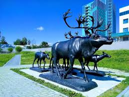
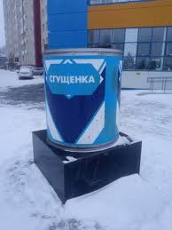
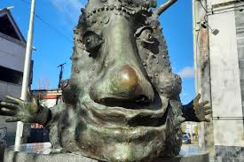

Что посмотреть в Сургуте
Восемь мест, которые делают город живым и неповторимым.
 Старый
СтарыйСургут
Старый Сургут

Памятникоснователям
Памятник основателям Сургута

Вантовыймост
Сургутский вантовый мост

ЗаСаймой
Парк Газпром
 Кедровый
КедровыйЛог
Кедровый Лог
 Храм
ХрамХрам Преображения Господня

Памятниксгущёнке
Памятник сгущёнке

Памятник"улыбка"
Памятник "улыбка"